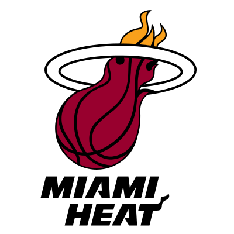

His best final NBA finish was #3 of 30, with the 2012-13 Memphis Grizzlies. In his 355 games for 4 teams over 7 seasons they went 208–147 (58.6%), +61 games over .500, with an average final finish of 12.1.
Jump to: Record by opponent · Season by season · Teammate help
Compare Quincy Pondexter with…
Suggested, same era and similar teammate help:


Final NBA finish, season by season
Title Finals Other playoffs Missed playoffs. #1 = champion; the dashed line is last place that season. Each point opens that season's final standings.
All 30 teams ranked in 2012-13, his best finish (#3)Teammate help
 Marc Gasol8.02 seasons
Marc Gasol8.02 seasons Anthony Davis5.51 season
Anthony Davis5.51 season Chris Paul3.51 season
Chris Paul3.51 season
Career
Career records (W–L, W − L, with and without) include 2026-27 games through Nov. 19, 2026; season counts and finishes are through 2025-26. Each card opens its board in the same scope. How we count.

Latest completed seasons
- 2018-19·
 San Antonio·#11 of 3048–34 · Lost in the first round 3–4 to
San Antonio·#11 of 3048–34 · Lost in the first round 3–4 to  Denver
Denver - 2017-18·
 Chicago·#24 of 3027–55 · Missed playoffs
Chicago·#24 of 3027–55 · Missed playoffs - 2014-15·
 New Orleans·#13 of 3045–37 · Lost in the first round 0–4 to
New Orleans·#13 of 3045–37 · Lost in the first round 0–4 to  Golden State
Golden State
Season by season
Newest first; every header sorts. Final NBA finish is the team's rank among all teams that season (#1 = champion) and opens that season's standings. "Without him" uses the team-season window; the span line counts only the games between his first and last game for the team.
| 2018-19 | #11 of 30 | 48–34 58.5% | Lost 1st round 3–4 | 53 of 82 | 29–24 54.7% | 19–10 65.5%span: 18–10, gap −9.6 | −10.8 | |
| 2017-18 | #24 of 30 | 27–55 32.9% | Missed playoffs | 23 of 82 | 6–17 26.1% | 21–38 35.6%span: 12–16, gap −16.8 | −9.5 | |
| 2014-15 | #6 of 30 | 55–27 67.1% | Lost conf semis 2–4 | 30 of 82 | 21–9 70.0% | 5–2 71.4%span: 4–1, gap −10.0 | −1.4 | |
| 2014-15 | #13 of 30 | 45–37 54.9% | Lost 1st round 0–4 | 45 of 82 | 27–18 60.0% | 1–1 50.0%span: N/A, gap N/A | +10.0 | |
| 2013-14 | #11 of 30 | 50–32 61.0% | Lost 1st round 3–4 | 15 of 82 | 7–8 46.7% | 43–24 64.2%span: 2–2, gap −3.3 | −17.5 | |
| 2012-13 | #3 of 30 | 56–26 68.3% | Lost conf finals 0–4 | 59 of 82 | 43–16 72.9% | 13–10 56.5%span: 13–10, gap +16.4 | +16.4 | |
| 2011-12 | #10 of 30 | 41–25 62.1% | Lost 1st round 3–4 LAC | 64 of 66 | 40–24 62.5% | 1–1 50.0%span: 1–1, gap +12.5 | +12.5 | |
| 2010-11 | #13 of 30 | 46–36 56.1% | Lost 1st round 2–4 | 66 of 82 | 35–31 53.0% | 11–5 68.8%span: 6–5, gap −1.5 | −15.7 |
On/off, starts and close games
From the lineup data, 1996-97 on. On/off is net points per 100 possessions with him on the floor minus off, a different unit from the win-rate gaps. Started and off the bench are team records in those games; close games are those within 5 points in the last 5 minutes with him on the floor.
| 2018-19 | −4.9 | N/A | 29–24 54.7% | 2–2 50.0% | |
| 2017-18 | −11.3 | 0–1 0.0% | 6–16 27.3% | 1–0 100.0% | |
| 2014-15 | −5.5 | 1–1 50.0% | 20–8 71.4% | 8–1 88.9% | |
| 2014-15 | −2.0 | 18–10 64.3% | 9–8 52.9% | 16–8 66.7% | |
| 2013-14 | −22.6 | 1–1 50.0% | 6–7 46.2% | 3–0 100.0% | |
| 2012-13 | −7.6 | 0–1 0.0% | 43–15 74.1% | 12–11 52.2% | |
| 2011-12 | +0.2 | 6–2 75.0% | 34–22 60.7% | 7–7 50.0% | |
| 2010-11 | −5.7 | 3–3 50.0% | 32–28 53.3% | 1–2 33.3% |
Teammate help by season
Two separate numbers per season, each with every teammate that adds to it. Help this season = Teammates Score points for honors won that season by teammates who shared a game with him. Help coming in = the same teammates' honors from the season before. How help works.
- 2018-19San Antonio
Help this season: 1 = 1 LaMarcus Aldridge
 LaMarcus Aldridge All-Star152 g
LaMarcus Aldridge All-Star152 g
More: help coming in and other teammates
Help coming in (teammates' honors the season before): 8 = 4 LaMarcus Aldridge + 4 DeMar DeRozan
Other teammates (no honors that season): Patrick Mills 53 g, Bryn Forbes 53 g, Jakob Poeltl 51 g, Marco Belinelli 50 g, DeMar DeRozan 49 g, Davis Bertans 48 g, Dante Cunningham 48 g, Rudy Gay 45 g, Derrick White 42 g, Chimezie Metu 28 g, Drew Eubanks 20 g, Pau Gasol 19 g, Lonnie Walker 14 g, Donatas Motiejunas 3 g
- 2017-18Chicago
Help this season: 0.25 = 0.25 Lauri Markkanen
 Lauri Markkanen All-Rookie 1st0.2521 g
Lauri Markkanen All-Rookie 1st0.2521 g
More: help coming in and other teammates
Help coming in (teammates' honors the season before): 0
Other teammates (no honors that season): Robin Lopez 23 g, Denzel Valentine 23 g, Jerian Grant 23 g, Justin Holiday 22 g, Cristiano Felicio 21 g, Paul Zipser 20 g, David Nwaba 16 g, Kris Dunn 16 g, Bobby Portis 16 g, Kay Felder 12 g, Nikola Mirotic 7 g, Antonio Blakeney 7 g, Ryan Arcidiacono 5 g, Zach LaVine 4 g
- 2014-15
 Memphis
Memphis
Help this season: 6 = 5 Marc Gasol + 1 Tony Allen
Marc Gasol All-NBA 1stAll-Star530 g Tony Allen All-Def 1st126 g
Tony Allen All-Def 1st126 g
More: help coming in and other teammates
Help coming in (teammates' honors the season before): 0
Other teammates (no honors that season): Mike Conley 30 g, Kosta Koufos 29 g, Beno Udrih 28 g, Jon Leuer 28 g, Vince Carter 28 g, Courtney Lee 27 g, Zach Randolph 22 g, Tayshaun Prince 20 g, Jarnell Stokes 14 g, Nick Calathes 11 g, Jordan Adams 7 g, Kalin Lucas 1 g
- 2014-15New Orleans
Help this season: 5.5 = 5.5 Anthony Davis
Anthony Davis All-NBA 1stAll-StarAll-Def 2nd5.532 g
More: help coming in and other teammates
Help coming in (teammates' honors the season before): 1 = 1 Anthony Davis
Other teammates (no honors that season): Dante Cunningham 45 g, Eric Gordon 45 g, Tyreke Evans 43 g, Omer Asik 43 g, Alexis Ajinca 43 g, Luke Babbitt 31 g, Norris Cole 28 g, Jimmer Fredette 26 g, Ryan Anderson 24 g, Jeff Withey 18 g, Toney Douglas 12 g, Nate Wolters 10 g, Elliot Williams 8 g, Jrue Holiday 3 g and 1 more
- 2013-14MemphisHelp this season: 0, no honored teammate
More: help coming in
Help coming in (teammates' honors the season before): 9.5 = 7 Marc Gasol + 1 Zach Randolph + 1 Tony Allen + 0.5 Mike Conley
- 2012-13Memphis
Help this season: 9.5 = 7 Marc Gasol + 1 Tony Allen + 1 Zach Randolph + 0.5 Mike Conley
Marc Gasol DPOYAll-NBA 2ndAll-Def 2nd757 gTony Allen All-Def 1st156 g Zach Randolph All-Star155 g
Zach Randolph All-Star155 g Mike Conley All-Def 2nd0.558 g
Mike Conley All-Def 2nd0.558 g
More: help coming in and other teammates
Help coming in (teammates' honors the season before): 2 = 1 Marc Gasol + 1 Tony Allen
Other teammates (no honors that season): Jerryd Bayless 57 g, Darrell Arthur 36 g, Tayshaun Prince 32 g, Ed Davis 31 g, Wayne Ellington 27 g, Marreese Speights 27 g, Austin Daye 26 g, Rudy Gay 26 g, Tony Wroten 22 g, Jon Leuer 16 g, Keyon Dooling 7 g, Dexter Pittman 7 g, Josh Selby 6 g, Hamed Haddadi 5 g and 1 more
- 2011-12Memphis
Help this season: 2 = 1 Marc Gasol + 1 Tony Allen
Marc Gasol All-Star163 gTony Allen All-Def 1st156 g
More: help coming in and other teammates
Help coming in (teammates' honors the season before): 2.5 = 2 Zach Randolph + 0.5 Tony Allen
Other teammates (no honors that season): OJ Mayo 64 g, Rudy Gay 63 g, Dante Cunningham 62 g, Mike Conley 60 g, Marreese Speights 58 g, Jeremy Pargo 43 g, Hamed Haddadi 33 g, Zach Randolph 28 g, Josh Selby 27 g, Sam Young 20 g, Gilbert Arenas 17 g, Josh Davis 15 g, Lester Hudson 3 g, Brian Skinner 1 g
- 2010-11
 New Orleans
New Orleans
Help this season: 3.5 = 3.5 Chris Paul
Chris Paul All-NBA 3rdAll-StarAll-Def 2nd3.565 g
More: help coming in and other teammates
Help coming in (teammates' honors the season before): 1.125 = 1 Chris Paul + 0.125 Marcus Thornton
Other teammates (no honors that season): Marco Belinelli 64 g, Willie Green 62 g, Jason Smith 62 g, Trevor Ariza 60 g, Emeka Okafor 60 g, Jarrett Jack 60 g, David West 55 g, Marcus Thornton 35 g, Aaron Gray 34 g, Didier Ilunga-Mbenga 30 g, David Andersen 24 g, Carl Landry 20 g, Pat Ewing 7 g, Jerryd Bayless 5 g and 3 more
Record against each opponent
- Most playoff series against one franchise: 2 against the LA Clippers, 1–1 in series and 7–6 in games.
Regular season, through 2025-26 (2026-27 games not included): 355 games, 208–147, against 30 franchises.
Grouped by franchise (named as today); game lists keep each team's name that season. Filters and the tab are kept in the URL, so a filtered view can be shared.
| Games list | |||||||
|---|---|---|---|---|---|---|---|
| 17 | 8–9 | 47.1% | −1 | N/A | 2010-11 to 2018-19 | ||
| 17 | 9–8 | 52.9% | +1 | 1–1 (7–6 in games) | 2010-11 to 2018-19 | ||
| 17 | 7–10 | 41.2% | −3 | 1–0 (4–1 in games) | 2010-11 to 2018-19 | ||
| 16 | 10–6 | 62.5% | +4 | 0–1 (0–4 in games) | 2010-11 to 2018-19 | ||
| 16 | 9–7 | 56.2% | +2 | 0–1 (0–3 in games) | 2010-11 to 2018-19 | ||
| 16 | 13–3 | 81.2% | +10 | N/A | 2010-11 to 2018-19 | ||
| 16 | 10–6 | 62.5% | +4 | N/A | 2010-11 to 2018-19 | ||
| 16 | 5–11 | 31.2% | −6 | 0–1 (0–4 in games) | 2010-11 to 2017-18 | ||
| 15 | 11–4 | 73.3% | +7 | N/A | 2010-11 to 2018-19 | ||
| 14 | 10–4 | 71.4% | +6 | N/A | 2010-11 to 2018-19 | ||
| 14 | 9–5 | 64.3% | +4 | N/A | 2011-12 to 2018-19 | ||
| 14 | 8–6 | 57.1% | +2 | N/A | 2010-11 to 2018-19 | ||
| 14 | 5–9 | 35.7% | −4 | N/A | 2010-11 to 2018-19 | ||
| 13 | 5–8 | 38.5% | −3 | 0–1 (2–3 in games) | 2010-11 to 2018-19 | ||
| 11 | 7–4 | 63.6% | +3 | N/A | 2010-11 to 2018-19 | ||
| 10 | 8–2 | 80.0% | +6 | N/A | 2010-11 to 2018-19 | ||
 MiamiMost-faced: Dwyane Wade (8 games) · Head-to-Head | 10 | 6–4 | 60.0% | +2 | N/A | 2010-11 to 2018-19 | |
| 9 | 5–4 | 55.6% | +1 | N/A | 2010-11 to 2018-19 | ||
| 9 | 6–3 | 66.7% | +3 | N/A | 2010-11 to 2018-19 | ||
| 9 | 8–1 | 88.9% | +7 | N/A | 2010-11 to 2014-15 | ||
| 9 | 4–5 | 44.4% | −1 | N/A | 2010-11 to 2018-19 | ||
| 9 | 4–5 | 44.4% | −1 | N/A | 2010-11 to 2018-19 | ||
| 9 | 6–3 | 66.7% | +3 | N/A | 2010-11 to 2018-19 | ||
| 9 | 4–5 | 44.4% | −1 | N/A | 2010-11 to 2018-19 | ||
| 9 | 7–2 | 77.8% | +5 | N/A | 2010-11 to 2018-19 | ||
| 9 | 5–4 | 55.6% | +1 | N/A | 2010-11 to 2018-19 | ||
| 8 | 6–2 | 75.0% | +4 | N/A | 2010-11 to 2017-18 | ||
| 8 | 6–2 | 75.0% | +4 | N/A | 2010-11 to 2018-19 | ||
| 6 | 2–4 | 33.3% | −2 | N/A | 2010-11 to 2014-15 | ||
| 6 | 5–1 | 83.3% | +4 | N/A | 2010-11 to 2018-19 |
Rows add up to his career record in his games. A playoff series counts when he played in it; early round-robin games show as games only. How we count.
Playoffs, with and without him
| 2018-19 | Lost in the first round 3–4 to | #11 of 30 | 5 of 7 | 2–3 40.0% | 1–1 50.0% | −10.0 | |
| 2014-15 | Lost in the first round 0–4 to | #13 of 30 | 4 of 4 | 0–4 0.0% | N/A | N/A | |
| 2012-13 | Lost in the conference finals 0–4 to | #3 of 30 | 15 of 15 | 8–7 53.3% | N/A | N/A | |
| 2011-12 | Lost in the first round 3–4 to LA Clippers | #10 of 30 | 7 of 7 | 3–4 42.9% | N/A | N/A | |
| 2010-11 | Lost in the first round 2–4 to | #13 of 30 | 3 of 6 | 0–3 0.0% | 2–1 66.7% | −66.7 |
Arrival and departure
Team wins per 82 games the season before he arrived vs his first season there, and his last season vs the season after he left. Per 82 so short seasons compare fairly. These are team records, not a measure of what he did.
| Left | 2019-20 | 2018-19: 48–34 48.0 per 82 | 2019-20: 32–39 37.0 per 82 | −11.0 wins | |
| Arrived | 2018-19 | 2017-18: 47–35 47.0 per 82 | 2018-19: 48–34 48.0 per 82 | +1.0 wins | |
| Left | 2018-19 | 2017-18: 27–55 27.0 per 82 | 2018-19: 22–60 22.0 per 82 | −5.0 wins | |
| Arrived | 2017-18 | 2016-17: 41–41 41.0 per 82 | 2017-18: 27–55 27.0 per 82 | −14.0 wins | |
| Left | 2015-16 | 2014-15: 45–37 45.0 per 82 | 2015-16: 30–52 30.0 per 82 | −15.0 wins | |
| Left | 2015-16 | 2014-15: 55–27 55.0 per 82 | 2015-16: 42–40 42.0 per 82 | −13.0 wins | |
| Arrived | 2014-15 | 2013-14: 34–48 34.0 per 82 | 2014-15: 45–37 45.0 per 82 | +11.0 wins | |
| Arrived | 2011-12 | 2010-11: 46–36 46.0 per 82 | 2011-12: 41–25 50.9 per 82 | +4.9 wins | |
| Left | 2011-12 | 2010-11: 46–36 46.0 per 82 | 2011-12: 21–45 26.1 per 82 | −19.9 wins | |
| Arrived | 2010-11 | 2009-10: 37–45 37.0 per 82 | 2010-11: 46–36 46.0 per 82 | +9.0 wins |
Seasons split between teams
Each team's record before his first game for it, inside his window (games with and without him) and after his last game, in the seasons he played for two or more teams.
| 2014-15 | Oct. 29, 2014 to Jan. 7, 2015 | N/A | 26–11 70.3% | 29–16 64.4% | 30 | |
| 2014-15 | Jan. 14, 2015 to April 15, 2015 | 17–18 48.6% | 28–19 59.6% | N/A | 45 |
Best duos
Team record in regular-season games both played, top 10 by win %, at least 50 games together.
 Jerryd Bayless
52–23 69.3%
Jerryd Bayless
52–23 69.3%- Tony Allen
102–48 68.0%
- Marc Gasol
109–53 67.3%
- Zach Randolph
80–39 67.2%
- Jon Leuer 34–17 66.7%
 Marreese Speights
56–29 65.9%
Marreese Speights
56–29 65.9%- Mike Conley
107–56 65.6%
 Rudy Gay
87–47 64.9%
Rudy Gay
87–47 64.9% Tayshaun Prince
43–24 64.2%
Tayshaun Prince
43–24 64.2% OJ Mayo
40–24 62.5%
OJ Mayo
40–24 62.5%